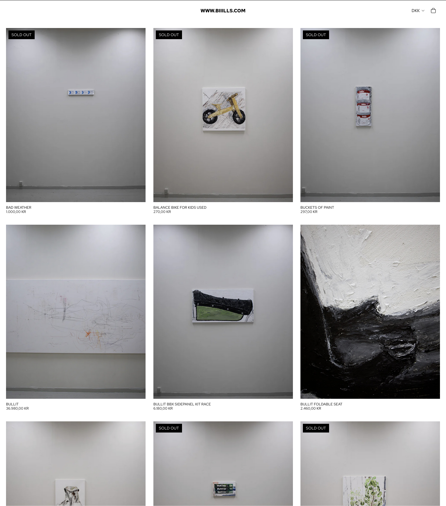

Navn: Peter Højlund Palluth *1992, Randers, Denmark
Lives and works in Copenhagen
For web related work: Hilsen IT
Member of: Jennifee-See Alternate.
A part of: MEGGAN
Education
2019-now Student at The Royal Danish Academy of Fine Arts, Copenhagen, Denmark
Selected
| Year | Title | Info | Poster | Location | Documentation |
|---|---|---|---|---|---|
| Dec 2025 | WWW.BIIILLS.COM | Solo. A webshop exhibition |
 |
www.biiills.com | ----||---- |
| June 2025 | BILLS | Solo. The exhibition was shown as a part of Rundgang 2025 |
 |
Maria's Kiosk, Holbergsgade 9, 1054 København | Download pdf (16MB) |
| June 2025 | DRIVING | Solo. Interview with Christiania TV about the exhibition |

| Månefiskeren, Christiania, Copenhagen | Download pdf (8MB) |
| April–May 2025 | Walk, watch, whistle | Co-curated with Julia Laszczka. Walk, Watch, Whistle presents a retrospective exhibition featuring selected works from Peter Olsen’s oeuvre, along with previously unpublished footage. His artistic practice spanned from 2003 to 2022. |
 |
Jennifee-See Alternate, Otto Busses Vej 33, København SV | Here |
| April 2024 | Milky Dream | Duo The exhibition was made in collaboration with Julia Laszczka |
 |
Q at the The Royal Danish Academy of Fine Arts | Here |
| May 2023 | fixed assembly | Duo The exhibition was made in collaboration with Julia Laszczka |
Ping Pong Basement at the The Royal Danish Academy of Fine Arts | Here |